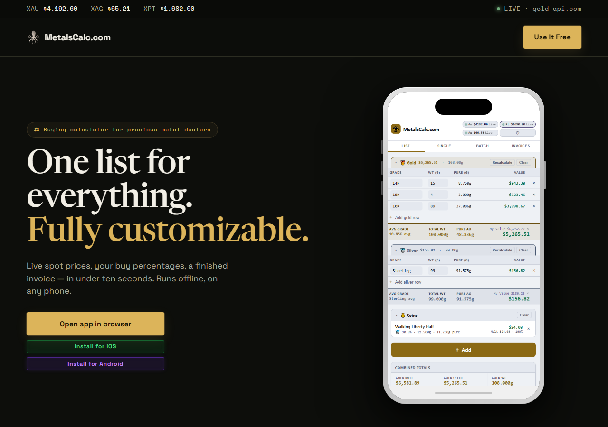
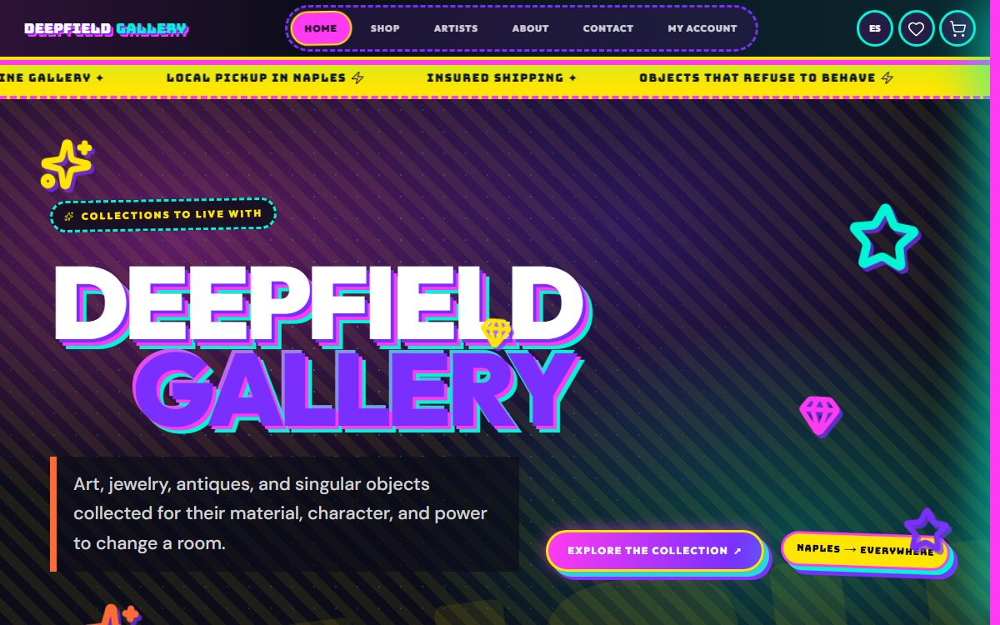

Designed and built for you
A custom design around your business — not a template you fill in.
- Built for your business, not a stock theme
- One fixed price, paid once
- Full scope quoted in writing before we begin
Website Design & Hosting
We design it, build it, and deploy it to your own hosting, or a free Netlify account in your name — then hand you the keys. No monthly bill, no contract. Need a change later? Send it over and we make it, billed hourly.
“We send a message, and it’s done — no back-and-forth, no confusion.”
Practice Manager · Medical Office, Naples FLWhat you get
One fixed price covers the build and a clean handoff. No setup fee beyond the quoted price, and no monthly bill afterward.
A custom design around your business — not a template you fill in.
Already have hosting? We deploy there. Don’t? We set up a free, base-tier Netlify account in your own name instead — either way, you hold the account.
Want something changed after launch? Send it over and we make it — no tickets, no portal, no plan to sign up for.
How it works
A Landing Page is usually live in about 1–2 weeks once content and access are in hand. Larger builds run longer, and Fast Track is available if you are working to a deadline.
01
We talk through your goals, the pages you need, content, forms, scheduling, SEO, and which pricing path fits.
02
After onboarding we design and build the site around the agreed scope, then get it in front of you.
03
You review and send one consolidated list of changes, we revise within the agreed scope, then you approve. Larger builds review in stages.
04
We launch it, deployed to your hosting or a free Netlify account in your name, and hand you every credential. Reach out anytime after for changes, billed hourly.
Timelines are estimates that start once all required content and access are received, not promises. The full eight-step process is on the details page.
Recent work

Estate Jewelry · Naples, FL
A live estate jewelry storefront that treats every piece as both jewelry and verifiable value — era and category filters, detailed condition reporting, and a full commerce back office.

Precious Metals · PWA
A product site and install hub for a precious-metal buying calculator — live spot prices on load prove the tool works, then a one-tap install flow puts it on the buyer’s phone.

Curated Gallery · Naples, FL
A curated gallery for art, jewelry, antiques and one-of-a-kind objects — five collections, artist profiles, saved items and accounts, with Naples pickup beside insured nationwide shipping.
How you buy it
There is one path: a one-time build, starting at $450. You pay for the build and own it outright at handoff — no monthly plan, no contract to maintain.
Also available
Tell us about the business and we will recommend the smallest package that does the job.